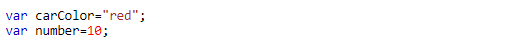
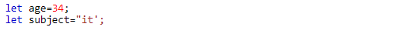
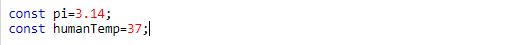
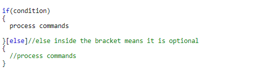
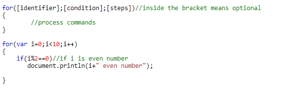
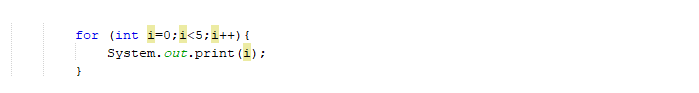
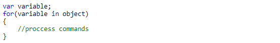
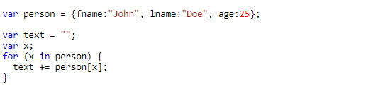

- Introduction What is JavaScript?and why it is always connected to websites? JS is an object orinted programming language that is build to add responsive and dynamic contents to the web pages.
- Language enviroemnt
- JS comments
- Single Line comment
- Multiple lines comments
- JS variables
-
var

-
let
-
const
- JS Data Types JS known as dynamic typed or lossely typed language, that means the variable can change its type during the program excution.
- if statement
- Syntax
- Example
- Loops
-
for Loop
-
syntax
-
example
-
for in
-
syntax
-
example
-
while
-
syntax
-
example
-
do while
-
syntax
-
example
- Functions
-
syntax
-
example(user defind functions)
To write JS code, you just need to have a browser and any text editor.JS code also can be written inside the HTML file.we recommend you to download Visual Studio Code(VSC) to use it in this tutorial.Steps for downloading VSC in the following vedio.
Comments help you to understand your program and also help the others who going to read your code.



Note:var and let are used for the same purposeconst is reffer to 'constant', you can use it if you have a constant variable that not change entire the program.

| Type | example | description |
|---|---|---|
| Undefind | var x; | when we do not assign any value to a variable, the compiler assign it to undefind type |
| Number | ver x=90; | type number specify any numercial value |
| Boolean | var x=true; | Boolean value have to options:true or false; |
| String | var x="Sarah"; | String type is any thing inside ("") |
| Array | var x=[1,2,3]; | array can holds several and different values inside its indecies |
| Object | var x={name:"unknown",age0}; | object type is semillar to array but we cannot access its element by index |
if statment change the program flow under specific conditions.The syntax of the if statment is semillar to many language like Java,C++ and more.


loops are helpful when we have a repeatde execution.instead of writing the code several times, we can write it inside a loop. The loop will repeat the code execution under specific condition. JS have many forms of loops, in this tutorial we only dicover 4 forms of loops which are:For,for in , while and do while.
for loop is used when we have a specific number of iterations(such as number of indeces in array)


for in is used to access ojcets elemnts(we do not know the number of iterations)


While loop also used when we do not know the number of iterations.However, while loop and do while not work with object elements.


do while always excute the loop section at least one time!beacuse the condition become after the comands section.In other hand, if in while loop or in for/for in there is n iterations, in do while there is n+1 iterations.


Functions are subprograms or(block of code)that perform speciifc functionality.there are different Types of function, built in function and user defind function.Bualt in functions are already exists with the language itself such as Math.random() and cannot be manipulated.This function return a randoom number between 0 and 1.user defind functions are function that programmer can create and also manipulate it.